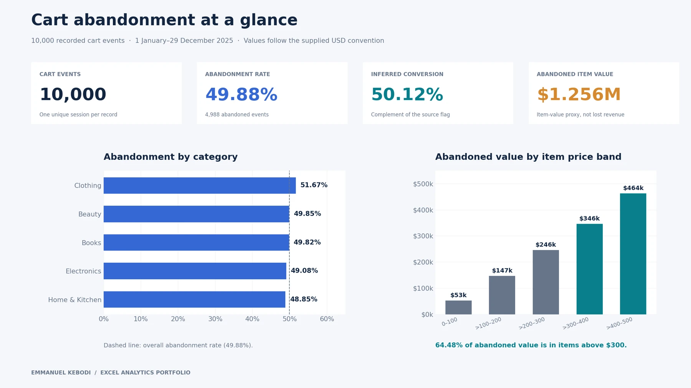

- Problem
- Which carts account for the most abandoned item value?
- Finding
- Items priced above $300 accounted for 64.48% of abandoned item value.
- Recommendation
- Test a recovery reminder for carts with items above $300. Compare completed purchases with a group that receives no reminder.
- Tools
- Microsoft Excel · Excel formulas · Charts

LAGOS, NIGERIA
Emmanuel Kebodi Friday
Data Analyst and Quantitative Researcher
I turn business and economic data into clear, evidence-based decisions. I use Excel, SQL and Power BI to analyse performance, and EViews and SPSS to test relationships with sound statistical methods.
Open to Data Analyst, Business Intelligence and Reporting roles.
AFRIMENT Data Analyst Career Enhancement Internship Program, October 2026
FEATURED ANALYSISEXCEL / E-COMMERCE

CART ABANDONMENTWhere abandoned item value concentrates
THE TOOLKITMicrosoft ExcelMySQLPower BIEViews & SPSSResearch writing
Data analytics projects.
Explore business questions through Excel dashboards, MySQL queries and Power BI reports.
- Problem
- How often do customers return for a second purchase?
- Finding
- Six of the ten sample customers purchased once, three purchased more than once and one had no recorded purchase.
- Recommendation
- Test a follow-up message for first-time buyers and compare second purchases with a group that receives no message.
- Tools
- MySQL Workbench · SQL joins · Subqueries
- Problem
- How often does a recorded signup lead to payment?
- Finding
- Across comparable campaign records, 13,700 signups and 106 paying customers gave a signup-to-paying rate of 0.77%.
- Recommendation
- Test a follow-up with customers who sign up and have yet to pay. Compare the share that reaches payment with a group that receives no message.
- Tools
- Power BI · DAX
- Problem
- Which campaign types lead on paid transactions and recorded revenue?
- Finding
- Influencer campaigns led with 60 paid transactions. Pay-per-click campaigns led recorded revenue at $11,842.36.
- Recommendation
- Test equal budgets for influencer and pay-per-click campaigns. Compare paid transactions and recorded revenue per dollar spent before shifting the budget.
- Tools
- Microsoft Excel · PivotTables · Slicers
Academic research
Independent academic research reports on Nigeria’s economy, banks and small businesses.
Featured studies
Browse the research archive
Research archive.
Search the remaining reports by topic, method or finding.
This project examines non-oil exports and economic performance in Nigeria between 1990 and 2024. It considers whether expanding exports beyond crude oil is associated with stronger economic growth.
This project examines how monetary policy relates to inflation in Nigeria between 1986 and 2024. It considers the policy rate, broad money supply, treasury bill rate, liquidity ratio and exchange rate.
This project examines the relationship between national savings and economic growth in Nigeria from 1981 to 2024. It also considers capital formation, broad money supply and inflation.
This project examines the relationship between money supply and inflation in Nigeria from 1990 to 2025, while also considering monetary policy, exchange rates and real output.
This project examines the relationship between trade openness and economic growth in Nigeria from 1986 to 2025. It also considers foreign investment, capital formation, exchange rates and inflation.
This project examines government debt and economic growth in Nigeria from 1995 to 2025. It considers domestic debt, external debt and debt servicing alongside investment and inflation.
This project examines whether rising domestic and external debt increase debt servicing pressure and affect capital expenditure in Nigeria between 1986 and 2025.
This project examines tax reforms and economic growth in Nigeria. The wider study covers 1986 to 2025, while the estimated model begins in 1994 because VAT starts in that year.
This project examines whether accumulated public debt is associated with economic growth in Nigeria. It covers 1986 to 2025, with the selected model estimated using 1989 to 2025 observations.
What I bring
As a data analyst
I clean and validate data, build clear Excel and Power BI reports, write SQL queries and turn findings into practical recommendations.
As a researcher
I frame the research question, select and test an appropriate method, and explain the results in plain language. My methods include ARDL, panel regression and survey regression.
ABOUT EMMANUEL KEBODI FRIDAY
Experience and education
Lagos, Nigeria
I’m Emmanuel Kebodi Friday, a data analyst with a B.Sc. in Economics from the University of Lagos.
My work connects business reporting with quantitative research. I use Excel, SQL, Power BI, EViews and SPSS to prepare data, explore relationships and communicate findings in plain language.
Experience, education & training
Freelance data analyst · 2024–present
Business reporting and quantitative research using Excel, SQL, Power BI, EViews and SPSS.
AFRIMENT Data Analyst Career Enhancement Internship Program, October 2026
As part of a team project covering more than 85 academies across Africa, I compared technology academies and their course catalogues, verified programme details against institutional sources and assessed whether programmes met the selection requirements.
Education
Master of Information Technology (MIT), University of Lagos (in progress)
B.Sc. Economics, University of Lagos
National Diploma in Metallurgical Engineering, Yaba College of Technology.
Training
Google Data Analytics Professional Certificate (Coursera) and Data Analytics Training and Professional Development (Learning to Land).
Download full CVFOUNDATIONEconomics, UNILAG
FOCUSAnalytics, reporting & research
CONTACT
Contact Emmanuel Kebodi Friday
Book a call to discuss a data analyst role, a reporting project or an economic research question.
Book a call